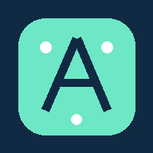
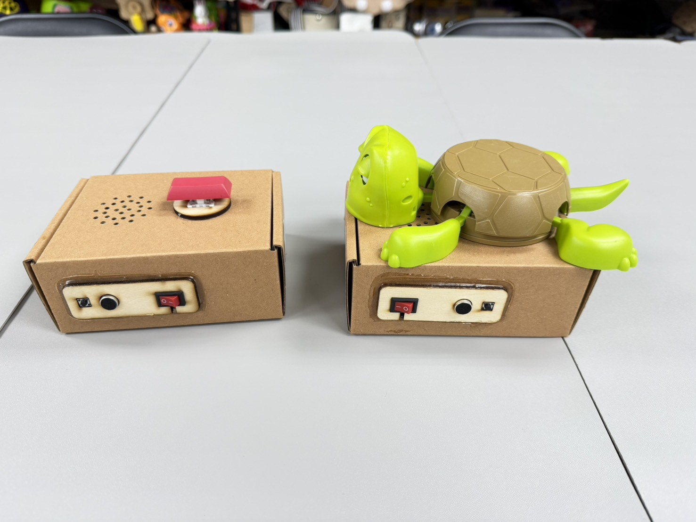
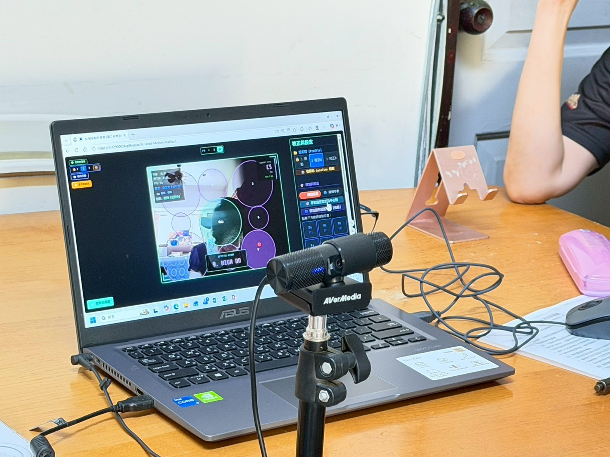
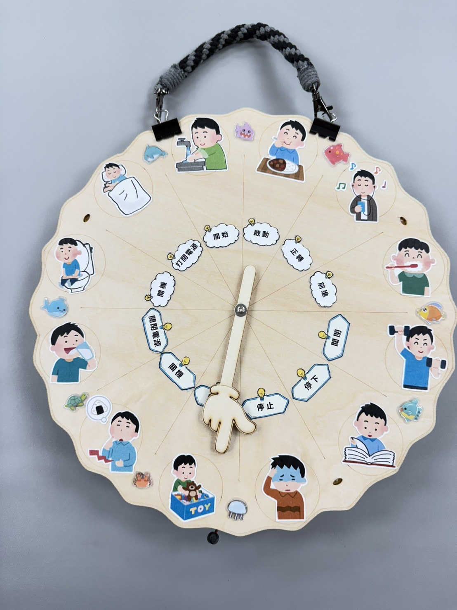
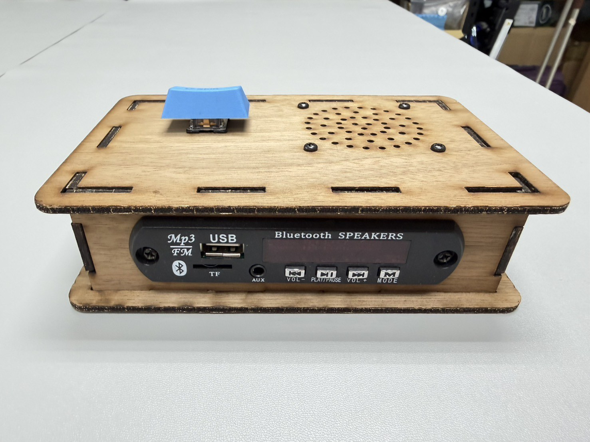
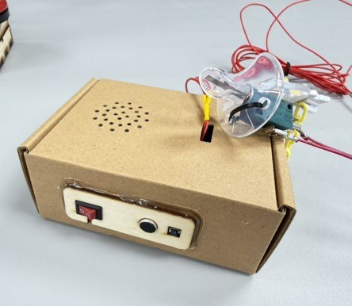
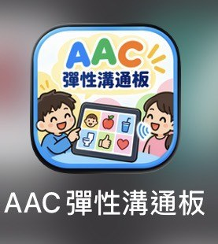
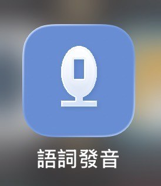

01COMMUNICATION
幸福發聲器
以簡易且可客製的觸發方式，協助有溝通需求的使用者更容易表達與參與；照片完整呈現兩種實作版本。
點擊照片放大 ＋
輔科舞告賀AxcellenT Assistive Technology從特殊需求使用者的真實情境出發，以低成本自製輔具、數位科技、AI 與跨域共製，把創意轉化成真正能在學習、生活與溝通中使用的支持工具。

從一個按不下去的按鈕、一句說不出口的話，到一個無法獨立完成的學習活動，需求可能很小，卻直接影響一個人的參與。
團隊依循「需求評估 → 設計 → 製作 → 場域測試 → 回饋修正」，把特殊教育、輔助科技、Maker、數位工具與跨域專業真正帶進使用現場。
以下使用團隊實際作品照片呈現。不同形式的輔具，對應不同使用者、動作能力、學習活動與溝通需求。
以簡易且可客製的觸發方式，協助有溝通需求的使用者更容易表達與參與；照片完整呈現兩種實作版本。
點擊照片放大 ＋
結合影像辨識、感測與電腦互動，降低操作門檻，讓音樂演奏成為更多人的可能。
點擊照片放大 ＋
把聲音與互動控制融入生活自理與學習活動，增加課堂參與及練習動機。
點擊照片放大 ＋
結合藍牙播放與大型觸發開關，讓故事、聲音與學習活動更容易被操作。
點擊照片放大 ＋
依特殊動作模式重新設計觸發方式，讓微小或特定口部動作也能成為有效控制。
點擊照片放大 ＋
可自訂版面、圖片與錄音的 PWA 溝通工具，支援手機、平板與跨平台使用。
點擊照片放大 ＋
結合語音辨識、教師自訂內容與即時回饋，建立可攜式語詞練習工具。
點擊照片放大 ＋除了照片中的作品，團隊也持續發展行動黑屋、感官探索裝置、無線控制、玩具改裝與各類客製化輔助科技。完整內容可前往 AxcellenT 官方網站查看。
看更多作品 →輔具不是製作完成就結束，而是在真實場域中持續驗證與修正。
從生活、學習與溝通情境看見困難。
和教師、治療師、家長及場域夥伴確認問題。
以低成本、可修改與實用為原則建立原型。
回到實際使用環境觀察操作成效。
依使用者反應持續改善硬體與互動方式。
透過研習、影片與合作把方法帶到更多地方。
透過課程、研習與實作，讓輔助科技進入真實教學現場。
把需求評估與快速製作連結，縮短從問題到解決方案的距離。
與兒童發展及身心障礙服務場域合作，讓設計貼近生活。
分享低成本、自製、可複製的輔助科技經驗，跨越資源限制。
支援加入手機／平板主畫面、獨立開啟、基本離線介面與新版提示。